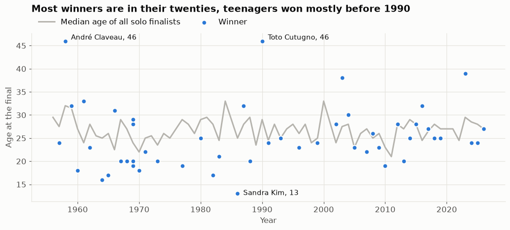
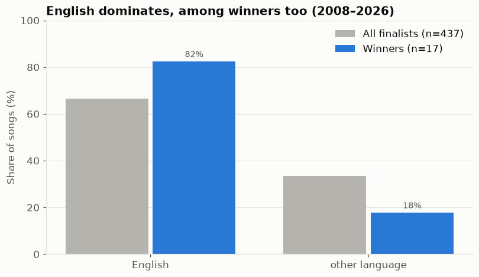
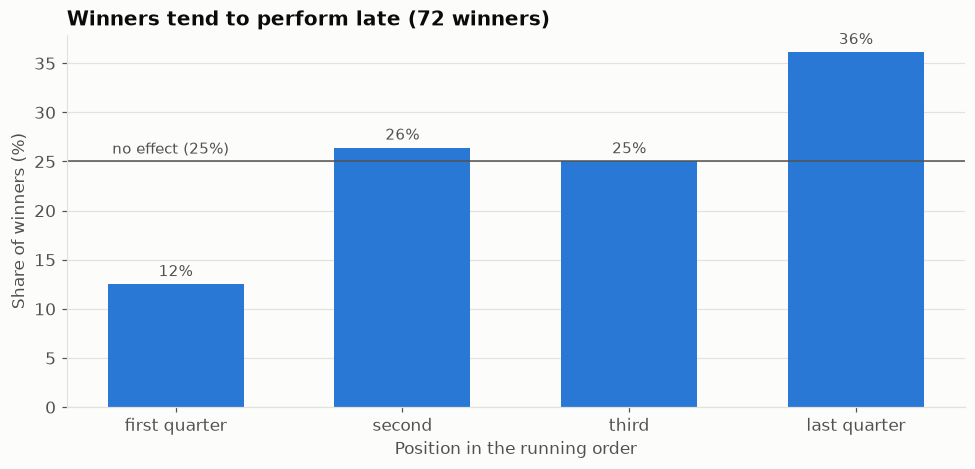
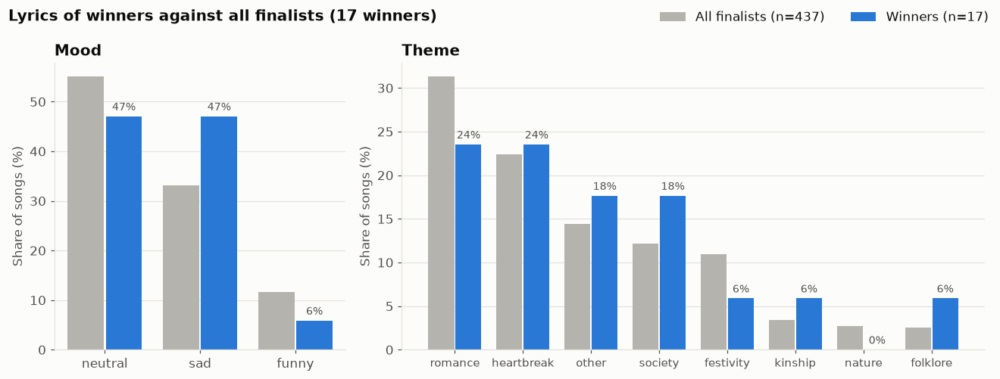
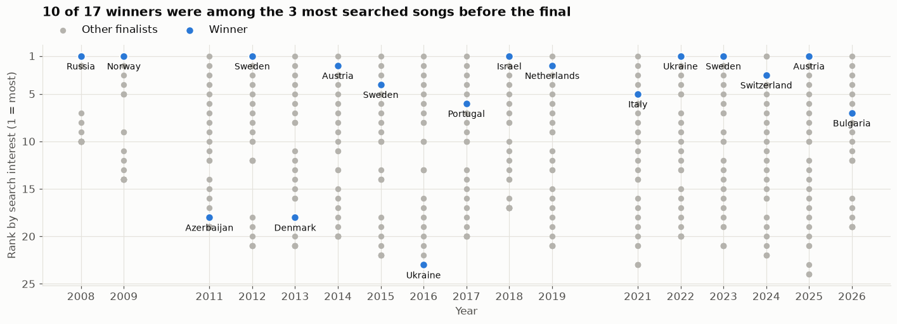
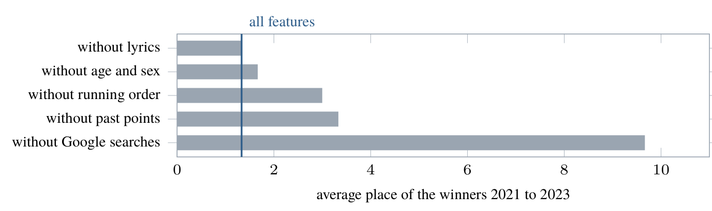
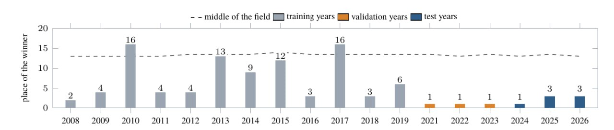

Motivation
Since 1956, European countries have come together every year to compete for the best song. Eurovision is in the center of attention each May, and betting markets start booming around that time with predictions of the winner.
But do we know who should win, statistically? In this project we analyzed previous Eurovision contests to get insights into trends, the public's and the juries' favorites, and the general statistics that define winners.
We wanted to help prediction market users make smarter bets, and to give competing Eurovision artists insights into their statistical advantages and disadvantages.
We also wanted to explore how shared borders and languages between countries influence voting.
Dataset description
One row is one directed pair in one contest: who gives, who receives, how many points, jury or televote. Finals only, 2016 to 2026 (2020 was cancelled).
Sources
- Votes and entries: the Spijkervet Eurovision dataset up to 2023, eurovisionworld.com from 2024.
- Country relationship: CEPII GeoDist, with distance, shared border, shared language and colonial ties.
- Past points: all voting history since 1957, used only to say how much two countries liked each other before.
- Attention: Google Trends, per voting country, web and YouTube search, for the 30 days before each final.
- Lyrics: mood, theme and repetition of each song, labelled by a language model from the LRCLIB lyrics database.
- Artists: age and sex from Wikidata.
We deliberately do not use YouTube views. They are only available as of today, so a winner would get views it earned because it won.
Visualizations
We looked at how winners are distributed across categories, and which factors are most associated with winning, i.e. with the highest finalist-to-winner conversion.

We also looked at how the language and content of the lyrics relate to winning, using lyrics from the 2008-2026 contests (2010 is missing: no lyrics data).



We used Google searches to measure pre-final interest in each song (Google Trends, 2016-f2026). These features later turned out to clearly improve our predictions.

Prediction results
So, can we actually tell who is going to win Eurovision the day before the final? Partly yes!
We predicted how many points every country gives every other country, using only what is already known before the show: how these two countries voted for each other in the past, how much people in the voting country googled the song, the distance between the countries, shared language and the running order. Then we added up the predicted points for every song and got our own scoreboard.
Which factors matter?
Past points, web interest and running position usually went together with high scores, while neutral lyrics tended to receive lower scores. A longer distance between two countries also meant fewer points between them.
Google searches turned out to be one of the most important things. Without them the validation winners dropped from predicted 1st, 2nd and 1st places to 2nd, 9th and 18th respectively. On the other hand, lyrics turned out to be noise (in the data format that we had): leaving them out changed nothing in the predictions.

Can we predict the winner?
Our best model (gradient boosting, without the artist and lyrics features) learned from the finals of 2008-2019 and was picked by how well it found the winners of 2021-2023, and then used to predict winners of 2024-2026. It put Switzerland in 1st place and Austria and Bulgaria in 3rd. A random guess would put the winner somewhere around 13th.
We also tried leaving out each of the 18 finals one at a time and predicting it from all the others. The real winner came 1st in 4 finals and was in our top three in 9. The biggest misses were Germany in 2010 (the year we have no search data for) and Portugal in 2017, both of which we put 16th.

Jury and public: an overview
Since 2016 the jury and the public vote separately, so for 2016-2026 our pipeline also predicts the two rankings on their own. Each year is left out once and predicted from all the others.
| Model | Jury error (lower is better) | Public error (lower is better) |
|---|---|---|
| Random order | 8.51 | 8.43 |
| Country pairs only, without searches | 6.77 | 6.41 |
| Country pairs + Google searches | 6.40 | 5.56 |
The numbers are how many places a song is off on average, so lower is better. Google searches help the public ranking about twice as much as the jury's. Also, the jury ranking correlates with the public one at only 0.43 (Spearman). When we compute the earlier votes from the training years alone, these numbers change by at most 0.13 places. They are a different check from the winner results above, and the features were chosen on the same years, so the two can't be compared directly.
For orientation, Adamska and Reiss (2025) also leave out one year at a time (2008-2024). They get 6.07 places in the final with audio, lyrics, YouTube views, running order and voting history, 6.05 with YouTube views alone and 7.59 with running order and voting history. That last set is the closest to ours, and chance in their setup is 8.55.
We also simulated win chances 2,000 times per final from the errors of the public model. Of the eight songs that got more than 50 %, only one actually won, so we don't show these numbers.
Technical background
If you want all the details, everything is in our technical report (PDF), and the code is public on GitHub.
What one row means
Instead of one row per song, one row in our data is one country giving points to another country in one final. For example, in 2024 the Greek jury gave Cyprus 10 points and the Greek public gave 12, so that row gets 11. We did it this way because the 18 finals from 2008 to 2026 (2020 was cancelled) only have 462 songs, which is way too few to learn from, but they have 18,069 country pairs. Things like distance or past votes also only exist for a pair of countries anyway.
Up to 2015 every country had one vote, and since 2016 the jury and the public vote separately. So from 2016 we take half of jury plus public, and every year stays on the same 0 to 12 scale.
The Rest of the World bug
Since 2023, viewers from countries without an entry vote together as "Rest of the World". That is only a public vote, without a jury. To get one score per country we average jury and public, but for Rest of the World this "average" was just its full public score, so it counted twice as much as a real country. Because of that, our scoreboard didn't match the official results for 40 songs. Now it's halved like everyone else, and our scoreboard matches the official one exactly.
All our models use a fixed random seed, so this fix is the only reason the numbers changed after the presentation. If we undo it, we get exactly the presentation numbers again (winners 1st, 4th, 4th). With the fix it's 1st, 3rd, 3rd, so we kept the new ones.
Google searches
Google Trends gives us how much each voting country searched for each song, on web search and YouTube, during the 30 days before the final. It doesn't give real search numbers: it scales the country with the most interest to 100 and shares that scale between everything you ask for at once. Our first download asked for several songs together and came back almost all zeros, so we queried every song on its own. We also checked that the final itself never sneaks into the window: the query stops the day before, and the show starts at about 19:00 UTC.
No peeking at the future
A forecast can only use what exists before the final. So semi-final points are out (they are published after the final), and so are YouTube views, since you can only get today's count, which already includes all the views a winner got for winning.
We split the finals by year and never at random, because votes from the same final depend on each other. We trained on 2008-2019, chose the model on 2021-2023 and tested on 2024-2026. Missing values are filled with the median of the training years.
Models
We tried seven models with scikit-learn: linear regression, lasso, random forests and gradient boosting, some with and some without the artist and lyrics features. We picked the one that put the real winners of 2021-2023 highest. Two models found all three winners there, so the tie went to the one with the higher R² (0.206 against 0.183): gradient boosting with learning rate 0.03, depth 3, at least 50 rows per leaf and 300 rounds.
The lyrics were labelled by mood, theme and repetition with a language model (gpt-oss-120b), which could only answer with fixed categories. The age and sex of solo artists come from Wikidata.
Pipeline
The pipeline is written in Python with pandas. One command (uv run esc all) downloads, cleans and joins all the sources, every download is pinned with a checksum, and the tests run offline. Because the pipeline was hard to follow for the rest of the group, it also writes one CSV file, so all three of us could work on the data without running it.
Limits
- Three test finals are very few, so any difference below one place could just be luck.
- We decided to measure the winner's place only after seeing the first results, and we had looked at the test finals with earlier versions of the models, so they weren't completely untouched.
- Search data before 2016 are mostly empty, and bands have no age or sex.
- Averaging jury and public mixes two votes that often don't agree.
Future improvements
There is a lot we would still like to try:
- A better model. For example a neural network, or a model that learns rankings directly instead of predicting points and adding them up.
- The songs themselves. Processing the actual video clips and the audio of the songs, which we had to drop because it was too much for this course.
- Better lyrics sentiment. Our lyrics labels didn't help, maybe a better way to read the mood of a song would.
- More sources of hype. Other trends besides Google, like Twitter? :)
- An earlier cut-off. Stopping the search data two days before the final instead of one.
- Knowing how sure we are. Resampling the years would show how much our results could move, and better calibrated win probabilities would finally make the predictions useful for prediction markets.
And if we did it all again, we would decide how to measure success before seeing any results, keep the test finals closed until the very end, query Google Trends one song at a time from the start and write down our main question in the first week.